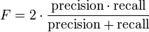

In Gabmap, precision is the number of matching items in the target area, devided by the total number of matching items (inside and outside the target area).
Recall is the number of matching items in the target area, devided by the total number of items in the target area (matching and non-matching).
Example:
precision = 5 / 8, recall = 5 / 7
→ see Wikipedia for details.